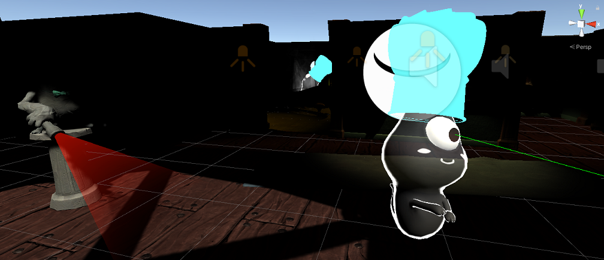
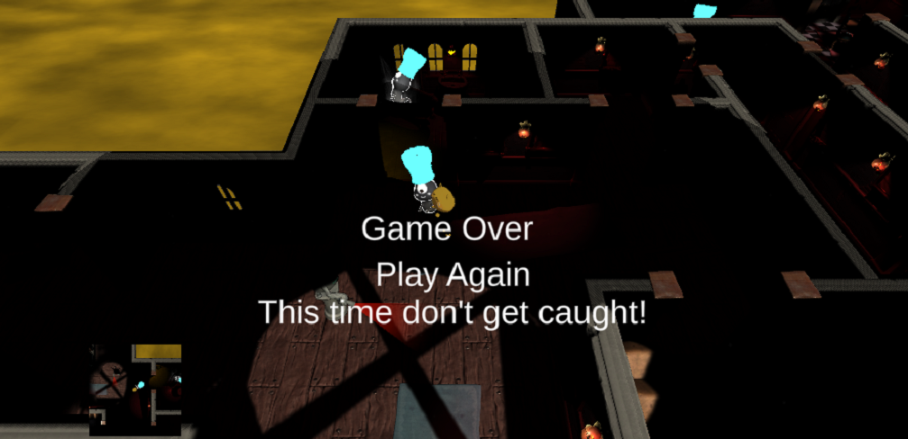

Haunted Jaunt 3D Game Modifications
XR Terra AR & VR Developer Program
In the XR Terra AR & VR Developer Certificate
Program, our first group project was to modify a 3D game shell, John Lemon's
Haunted Jaunt, adding lots of functionality to make it exciting and fun.
Role: Team Lead, Lead Developer

As our first group project of the XR Terra Ar & VR Developer Program, I led a team to add features and functionality to a 3D game shell. As our first 3D project, intended for playback on a flat screen, we were able to use knowledge of collisions, game play, sound, lighting, assets, event broadcasting, and more.
In the game the user played the part of John Lemon, who could be directed around a haunted mansion by using the arrow keys. The player, as John, needed to avoid being spotted by ghosts, or coming in contact with gargoyles before making it to a particular room (the game would finish successfully). If the user was spotted by a ghost, a siren would sound and lighting change, and the ghosts then chased John. If a ghost made contact with John, the game would end, and John made a noise. Whether getting caught or finishing, the player was given the option to play again.
Responsibilities
- Modified a 3D game shell, Unity's John Lemon's Haunted Jaunt: 3D Beginner
- As Team Lead, led daily meetings, helped defined sets of essential tasks to complete a minimal viable product, and more
- Saved the start position and sent the player back to it, after the player selected to play again
- Detect collections when the player had contact with a ghost or gargole
- Used raycasting to detect a patrolling ghost spotting the player
- Create waypoints so patrolling ghosts normally moved along set paths on a nav mesh
- Modified the environment by adding lights and doors to increase the number of paths the player may traverse to complete the game successfully
- Detected when the user had completed the game by arriving in a certain room
- Inserted royalty-free images into picture frames
- Indicated to the user when the character could use a keyboard key to activate something in the game - a SPACEBAR press to force a piece of furniture out the way; and an "E" key press to open closed door
- Detect collisions with furniture and doors to let the user know they were close enough to act upon them
- Addded glowing baker's hats to make ghosts more apparent
- Added a Mini-Map so user can see top-down orthogonal view of the player's location
- Added background sound effects for when the player was caught by a ghost, finished the game successfully, etc.
- Implemented a "Red Alert" Game Mode to indicate when the player was "spotted" by a ghost (raycasting ) - lighting changed to red, a background siren sound looped, and the ghosts begin to chase the player
- Used an event manager to dispatch and listen for events to simplify code
Media
Avoid ghosts and gargoyles!
Do not get caught!